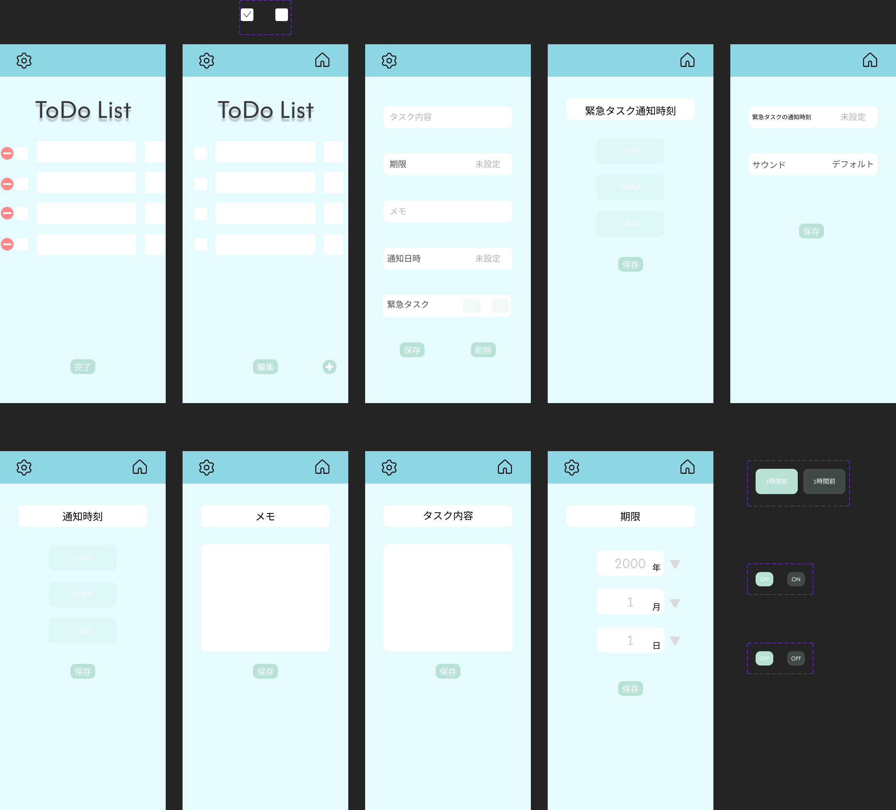
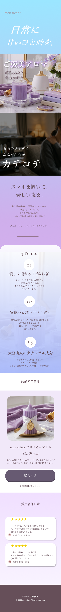
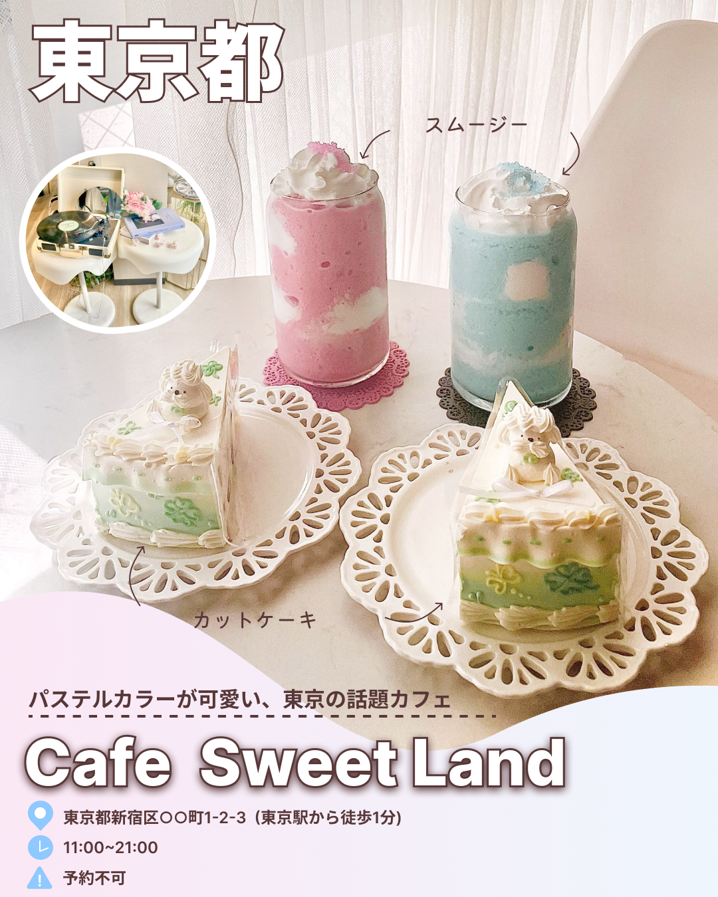

No.1
作品１.カフェ注文用タブレットメニュー UI
使用ツール : Figma
全体を落ち着いたダークブラウンとくすみピンクで統一し、カフェの持つお洒落な世界観を壊さないように配慮しました。また、「カゴに追加」や「ご注文確定」などの重要なアクションボタンには、補色である黄緑色をアクセントカラーとして使用し、直感的に次の操作へ進めるような視覚的誘導（UI）を意識しました。

No.2
作品２.ToDo List
使用ツール : Figma
スマートフォンの片手操作を意識したボタン配置と、タスクの緊急度を色で識別できるシンプルなコンポーネント設計を行いました。

No.3
作品３.架空のライフスタイル雑貨ブランド
mon trésor（モン・トレゾール）」スマホ用LPデザイン
使用ツール : Figma
スマホ特有の「流し見」を意識し、説明的になりすぎないビジュアルと共感性を重視しました。ファーストビュー直後に「スマホの見すぎによる心のカチコチ感」という具体的な悩みに寄り添うセクションを配置し、そこから解決策（キャンドルのある暮らし）へと滑らかに繋げる構成にしています。
日本語フォントには上品な明朝体を採用しつつ、「3 Points」の数字部分にはただの明朝体ではなくおしゃれなCormorant
Garamondを組み合わせ、Z世代に人気の高い、垢抜けた海外ブランドのような空気感を演出しています。また、白いカードの背景にテーマカラーを意識したごく薄いラベンダーのシャドウを仕込むことで、画面全体の立体感と高級感を高めました。

No.4
作品４.架空のカフェ紹介
「Cafe Sweet Land」SNS投稿用バナーデザイン
使用ツール : Figma
SNSで流れてくる画像の中でも一瞬で目に留まるように、料理写真を大きく見せることを最優先にしたレイアウトにしました。タイトルの「東京都」は太めの白フチ文字で大きく配置し、スクロール中でも「どこのお店か」がすぐ伝わるようにしています。
店名には丸みのある太字フォントを使い、ポップで親しみやすい印象に。ピンクと水色のスムージー、ミントグリーンのケーキという写真の色味に合わせて、下部のカラーを淡いピンクから水色へのグラデーションにし、全体を優しいパステルトーンでまとめました。また、「スムージー」「カットケーキ」といった商品名は手書き風の矢印で添えることで、説明的になりすぎず柔らかい雰囲気を保ちつつ、住所・営業時間・予約可否などの必要な情報はアイコン付きでまとめ、ひと目で読み取れるように整理しています。

Contact
メールアドレス → ayaka.mochizuki0629@gmail.com